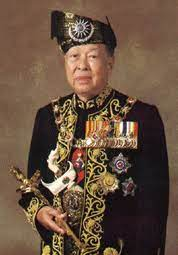

ultan Salahuddin Abdul Aziz Shah Al-Haj ibni Almarhum Sultan Hisamuddin Alam Shah Al-Haj (Jawi: سلطان صلاح الدين عبدالعزيز شاه الحاج إبن المرحوم سلطان حسام الدين عالم شاه الحاج; 8 March 1926 – 21 November 2001) was the 11th Yang di-Pertuan Agong of Malaysia and eighth Sultan of Selangor.
Sultan Salahuddin Abdul Aziz Shah married at least four wives.
His first wife and cousin, HRH Paduka Bonda Raja Raja Nur Saidatul Ihsan binti Al Marhum Raja Bendahara Tengku Badar Shah, whom he later divorced, bore:
- Tengku Nor Halija
- Tengku Idris Shah, later Sultan Sharafuddin Idris Shah
- Tengku Puteri Sofiah (died 8 June 2017)
- Tengku Laksamana Tengku Sulaiman Shah
- Tengku Puteri Zahariah (Ku Yah)
- Tengku Fatimah
- Tengku Panglima Besar Tengku Abdul Samad
- Tengku Puteri Arafiah
- Tengku Puteri Aishah (died 30 July 2012)
Che Maheram binti Muhammad Rais, his second wife, bore him:
His royal consort, Tengku Ampuan Rahimah binti Sultan Abdul Aziz Shah of the Langkat royal family in Sumatra died in 1993 before his election as Yang di-Pertuan Agong. She was the mother of:
His last wife, commoner Tuanku Siti Aishah binti Abdul Rahman, served as his Raja Permaisuri Agong. Being fifty years younger than him, she was also the youngest ever occupant of that office – only 29 at her succession to the throne.